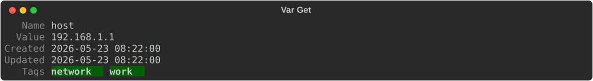
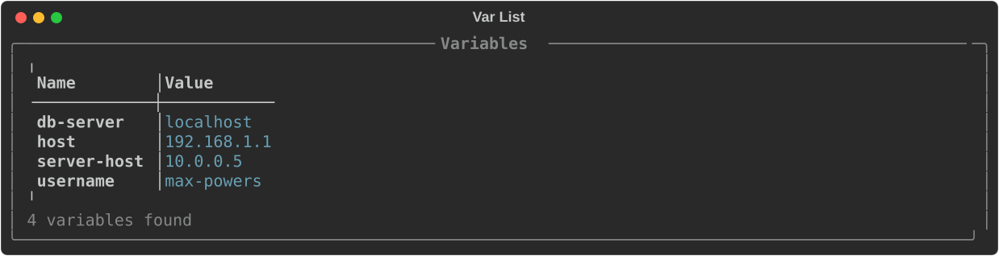
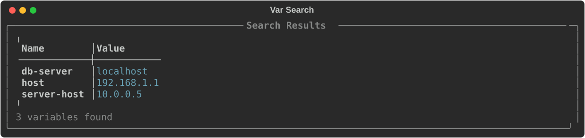
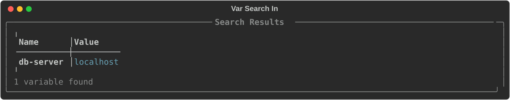
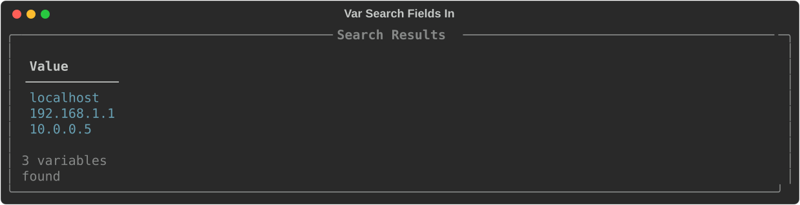

var¶
The var subcommand manages variables. Variables are reusable values that can be referenced
inside your saved commands using the <variable-name> syntax, allowing a single command to
work across many different situations.
The available subcommands for var are:
Some of these subcommands also have aliases available. These will be discussed in the subcommands section.
add¶
The add subcommand saves a new variable to your CmdBox database.
When creating a variable, you only have to provide a name. You will be prompted for the rest of the fields.
This same variable can be added in one line.
Notice that name and value are provided without a flag. They are not optional fields.
You will always be prompted for tags.
Autocomplete
Autocomplete is available for stored tags. In the tag prompt, start typing and the available tags will be suggested.
If you want to be prompted for every field, use the --interactive (or -i) flag.
> cb var add --interactive
? Enter name: host
? Enter value: 192.168.1.1
? Enter tags (comma-separated): network,work
get¶
The get subcommand retrieves a variable and displays all of its available fields along with its tags.

update¶
Aliases
update can also be called as edit.
The update subcommand is used to make changes to a variable you already have stored.
You can update a specific field by providing the appropriate flag and the new value.
To rename a variable, use the --name flag.
Multiple fields can be updated at once using the --set flag with key=value pairs, with each pair separated by a comma
and no white-space.
Autocomplete
Autocomplete is available for field names when using --set.
Warning
Be sure to wrap your values in quotes if they contain spaces.
If you want to update the current value of a field without supplying a completely new value, use the --edit
(or -e) flag. You will be prompted for each field, pre-filled with its current value.
If you only want to update a specific field in edit mode, use the --edit-fields (or -ef) flag to specify
which fields to prompt for.
Warning
--edit-fields can only be used in conjunction with the --edit flag.
list¶
Aliases
list can also be called as ls.
The list subcommand displays all variables stored in your database.

By default, only the name, value, and tags of each variable are displayed, and the default order is by name.
The default fields and ordering can be adjusted in your settings, or by supplying additional options to the list
subcommand.
List can be filtered to only variables that have a specific tag.
The --tag flag can be used multiple times to filter by multiple tags.
Tip
When using multiple --tag flags, variables that feature any of those tags will be displayed.
To change the order, use the --order flag and specify the field you want to order by.
To change the displayed fields, use the --field flag and specify the fields you want to display.
If you have a large number of variables, use the --limit flag to cap the number of results.
Results are paged the same way cmd list results are. See Paging output for keybindings
and configuration. The --page and --no-page flags work the same way here.
search¶
Aliases
search can also be called as find.
While list lets you filter variables by tag, search lets you filter by the content of any available field.
By default, search looks in the name and value fields.

Using the --in flag, you can limit your search to specific fields.

To control which fields appear in the results, use the --field flag.

As with list, you can limit the number of results using the --limit flag.
Search results are paged the same way. See Paging output.
delete¶
Aliases
delete can also be called as rm, del, or remove.
The delete subcommand removes a variable from your database. It only requires the name of the variable
you want to remove.
Warning
This action cannot be undone.
tag¶
The tag subcommand adds tags to a stored variable. Provide the name of the variable followed by the
tag you want to add.
Autocomplete
Autocomplete is available for both variable names and tag names.
untag¶
The untag subcommand removes a tag from a stored variable. It works the same way as tag.